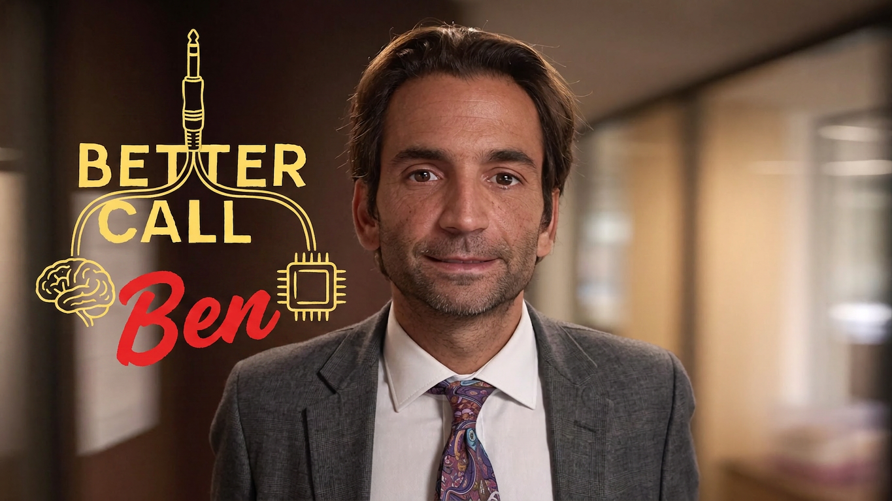
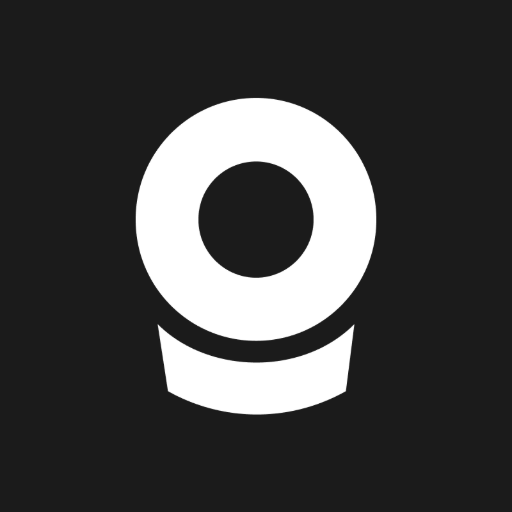
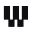
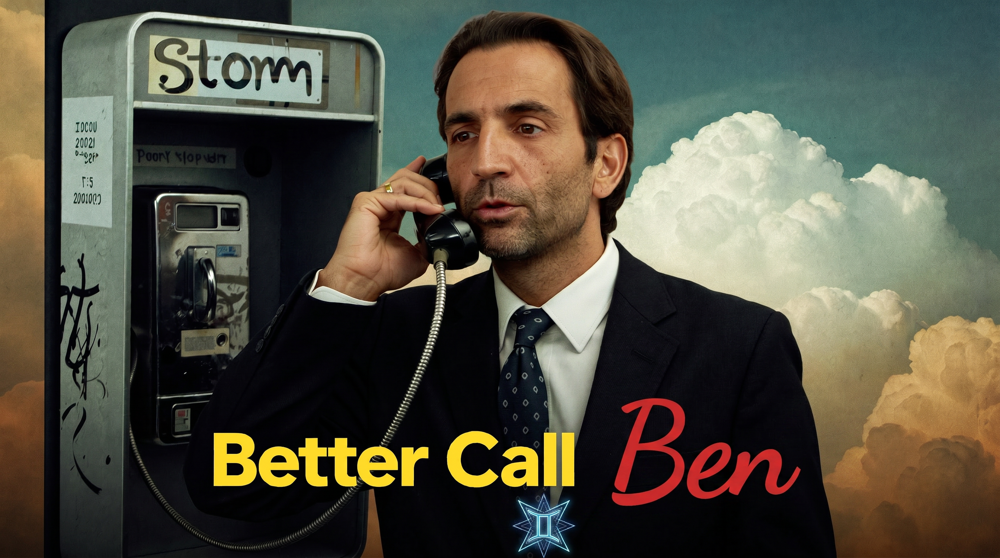

Benjamin Sebagh · Stratège IA créative
Votre stratège IA. De la créa à la prod.
Je branche votre cerveau sur l'IA générative. Depuis 2024, je forme vos équipes, je produis vos contenus et je construis vos workflows IA sur mesure. Avec une règle : si ça a l'air généré, c'est raté.
La thèse
L'IA ne remplace pas votre cerveau.
Elle s'y branche.
Le bon moteur pour chaque usage. Une méthode qui valide chaque étape. Un œil qui refuse tout ce qui a l'air IA. C'est la différence entre du contenu généré et du contenu qui vous ressemble.
Mes services
Je forme. Je produis. Je câble.
-
01
IA Training
Je forme vos équipes.
Formation à l'IA générative créative, sur-mesure et calée sur vos vrais enjeux. Ponctuelle ou continue, dans vos locaux ou les miens. Écrite pour des équipes créa, pas pour des ingénieurs.
-
02
IA Prod
Je produis pour vous.
Visuels premium, packshots, retouche, snack content, films, avatars. Chaque livrable passe par un comparatif de moteurs et une validation plan par plan. Prêt à diffuser, droits tous supports inclus.
-
03
IA Workflow
Je construis vos workflows sur mesure.
Des workflows IA créatifs conçus pour vos besoins, sur toutes les plateformes nodales : Weavy, Magnific Spaces, Pletor. Je teste les moteurs sur vos images, je câble le graphe minimal, et je vous livre un outil prêt à tourner, documenté, au coût connu par rendu.
Les outils que je manipule tous les jours
 Higgsfield
Higgsfield- Magnific

Pletor
Weavy Claude
Claude HeyGen
HeyGen ElevenLabs
ElevenLabs Gemini · Veo
Gemini · Veo Webflow
Webflow
Réalisations 100 % IA
Des preuves, pas des promesses

Storm. Toujours décrocher.
« Ben est super pédagogue. La synthèse actu IA donne une vue globale de tous les outils sans avoir à chercher partout. Et ça donne trop envie de tester, genre le système nodal de Weavy. »